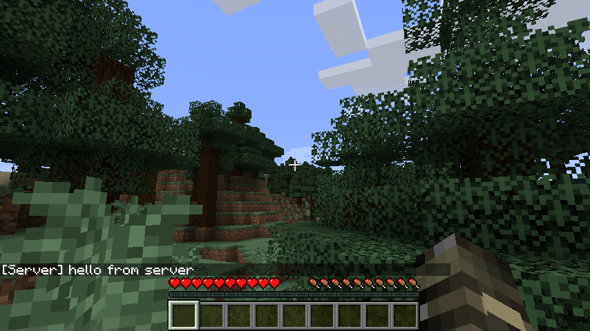

7 minutes
How to create a Minecraft server using Docker
Introduction
I want to create a Minecraft server using docker.
For this tutorial, I’ll use Minecraft version 1.16.1.
The goal of this tutorial:
- Create a Minecraft server
- Use Docker to run the server in a container
- Being able to select the version of the server
The API
Minecraft has an API to access and retrieve every available version.
The version manifest is available here, as you can see it’s a plain json file that contains all versions published.
{
"latest": {
"release": "1.16.2",
"snapshot": "1.16.2"
},
"versions": [
// ...
{
"id": "1.16.1",
"type": "release",
"url": "https://launchermeta.mojang.com/v1/packages/007e584150d3eb937762a491c340732d01cce945/1.16.1.json",
"time": "2020-08-14T14:41:00+00:00",
"releaseTime": "2020-06-24T10:31:40+00:00"
},
// ...
]
}
If we follow the link
in the url of the element with id: 1.16.1, we get the following JSON
{
"arguments": {/*...*/},
"assetIndex": {/*...*/},
"assets": "1.16",
"downloads": {
"client": {/*...*/},
"client_mappings": {/*...*/},
"server": {
"sha1": "a412fd69db1f81db3f511c1463fd304675244077",
"size": 37968964,
"url": "https://launcher.mojang.com/v1/objects/a412fd69db1f81db3f511c1463fd304675244077/server.jar"
},
"server_mappings": {/*...*/}
},
"id": "1.16.1",
"libraries": [/*...*/],
"logging": {/*...*/},
"mainClass": "net.minecraft.client.main.Main",
"minimumLauncherVersion": 21,
"releaseTime": "2020-06-24T10:31:40+00:00",
"time": "2020-06-24T10:31:40+00:00",
"type": "release"
}
Again, if we follow the link in downloads.server.url, we download the jar file of the server
Downloading the server jar file
To download the server file and also selecting the server version, I will use a script to automate that action.
The script need to be able to:
- Listing the available version
- Selected a version or use the latest as default
- Download the server file
The option
First we need to be able to configure which server version to download. I will put all these options on the CLI and using the module argparse to manage the options.
from argparse import ArgumentParser
LATEST_RELEASE = "last-release"
LATEST_SNAPSHOT = "last-snapshot"
def parseArgs():
parser = ArgumentParser()
parser.add_argument(
"--version", "-v",
help="the version of the minecraft server to download, you can use {} or {} to download the latest release / snapshot".format(
LATEST_RELEASE, LATEST_SNAPSHOT),
required=False,
default=LATEST_RELEASE)
parser.add_argument(
"--list", "-l", help="list the available version", choices=["release", "snapshot"], default=None)
parser.add_argument(
"--out", "-o", help="output destination of the server file", default="server.jar")
return parser.parse_args()
In summary, we have:
--listto list the available version--outto change the output path for the server file--versionto select a version
Listing the versions
It can be quite tedious to enter the right version name,
that why we added the --list option.
Now we just need to implement the option behavior
import json
import logging as log
from urllib.request import urlopen
VERSION_MANIFEST_URL = "https://launchermeta.mojang.com/mc/game/version_manifest.json"
def loadManifest():
return json.load(
urlopen(VERSION_MANIFEST_URL))
def getVersionList(manifest, t):
""" Generate an array of all available version """
v = filter(lambda entry: entry["type"] == t, manifest["versions"])
m = map(lambda entry: entry["id"], v)
return list(m)
if __name__ == "__main__":
log.basicConfig(level=log.INFO)
args = parseArgs()
manifest = loadManifest()
if args.list is not None:
log.info("available {} versions: {}".format(
args.list, getVersionList(manifest, args.list)))
exit(0)
- We retrieve all the version in the manifest at
VERSION_MANIFEST_URL - We retrieve every
idinmanifest["versions"]
With that done, we get the following output:
$ python3 serverdl.py -l release
INFO:root:available release versions: ['1.16.2', '1.16.1', '1.16', '1.15.2', '1.15.1', '1.15', '1.14.4', '1.14.3', '1.14.2', '1.14.1', '1.14', '1.13.2', '1.13.1', '1.13', '1.12.2', '1.12.1', '1.12', '1.11.2', '1.11.1', '1.11', '1.10.2', '1.10.1', '1.10', '1.9.4', '1.9.3', '1.9.2', '1.9.1', '1.9', '1.8.9', '1.8.8', '1.8.7', '1.8.6', '1.8.5', '1.8.4', '1.8.3', '1.8.2', '1.8.1', '1.8', '1.7.10', '1.7.9', '1.7.8', '1.7.7', '1.7.6', '1.7.5', '1.7.4', '1.7.3', '1.7.2', '1.6.4', '1.6.2', '1.6.1', '1.5.2', '1.5.1', '1.4.7', '1.4.5', '1.4.6', '1.4.4', '1.4.2', '1.3.2', '1.3.1', '1.2.5', '1.2.4', '1.2.3', '1.2.2', '1.2.1', '1.1', '1.0']
Selecting the version
Now that we are able to known which version is available, we need to implement the behavior
of the --version option
def standardizeVersion(version, manifest):
""" Standardize LATEST_{RELEASE,SNAPSHOT} into the corresponding version """
if version == LATEST_RELEASE:
return manifest["latest"]["release"]
if version == LATEST_SNAPSHOT:
return manifest["latest"]["snapshot"]
return version
def findVersionEntry(version, manifest):
""" Find the corresponding entry for the version in the manifest """
v = standardizeVersion(version, manifest)
versions = manifest["versions"]
for entry in versions:
if entry["id"] == v:
return entry
raise ValueError(
"version {} not found in manifest".format(version))
if __name__ == "__main__":
# ...
v = standardizeVersion(args.version, manifest)
log.info("selected version: {}".format(v))
versionEnt = findVersionEntry(v, manifest)
log.info("found entry with id {}".format(versionEnt["id"]))
Download the server
To download the server file, we need first to load the version specific JSON then download the server.
The JSON contain a sha1 properties to check the fingerprints of the file that we downloaded,
so I added checkServerChecksum() to check the file integrity.
import json
import logging as log
from urllib.request import urlopen, urlretrieve
def loadVersionEntry(entry):
log.debug("version entry: {}".format(entry["url"]))
return json.load(urlopen(entry["url"]))
def downloadEntry(entry, destination):
url = entry["downloads"]["server"]["url"]
log.debug("server download: {}".format(url))
return urlretrieve(url, destination)
def checkServerChecksum(entry, serverpath):
import hashlib
hash_sha1 = hashlib.sha1()
with open(serverpath, 'rb') as f:
for chunk in iter(lambda: f.read(4096), b''):
hash_sha1.update(chunk)
if entry["downloads"]["server"]["sha1"] != hash_sha1.hexdigest():
raise ValueError("{} did not match sha1 ( {} != {} )".format(
serverpath, entry["downloads"]["server"]["sha1"], hash_sha1.hexdigest()))
if __name__ == "__main__":
# ...
ent = loadVersionEntry(versionEnt)
log.info("successfully load version entry")
log.info("downloading server: {} b".format(
ent["downloads"]["server"]["size"]))
downloadEntry(ent, args.out)
log.info("checking server fingerprint")
checkServerChecksum(ent, args.out)
log.info("done, the file was downloaded at {}".format(args.out))
That it’s, we finish the script that download the server file.
the script is available here
Creating the container
To create the container, I use a Dockerfile to install and setup everything needed.
FROM alpine
RUN apk update && apk add python3 openjdk8-jre-base
COPY serverdl.py /usr/sbin/.
RUN adduser -S -u 42 minecraft && mkdir -p /home/minecraft/server && chown -R minecraft /home/minecraft
USER minecraft
WORKDIR /home/minecraft/server
COPY --chown=42:42 server.properties .
ARG VERSION=1.16.1
RUN python3 /usr/sbin/serverdl.py -v $VERSION -o server-$VERSION.jar && echo "eula=true" > eula.txt
ENV VERSION ${VERSION}
ENV MIN_MEM 1024M
ENV MAX_MEM 2048M
ENTRYPOINT java -Xms$MIN_MEM -Xmx$MAX_MEM -jar server-$VERSION.jar
You can change the version using the --build-arg option when building the container.
docker build --build-arg VERSION=1.5.2 -t minecraft .
You can change the memory settings by using --env option when running the container.
docker run --env MAX_MEM=4096M minecraft
Building the container
To build the server, we do as follows (if you to specify the server version see --build-arg):
$ docker build -t minecraft .
Sending build context to Docker daemon 9.206MB
[ ... output omitted ... ]
Successfully tagged minecraft:latest
Running the container
To run the server, we do as follows:
$ docker run --rm -dit --name minecraft -p 25565:25565 minecraft
9db734f4c923905f21e374d0c9d6aaa9be8f8b68aa039a2823cb0ca79b303f1e
$ docker container logs -f minecraft
[ ... output omitted ... ]
[13:17:46] [Worker-Main-6/INFO]: Loaded 7 recipes
[13:17:47] [Worker-Main-6/INFO]: Loaded 927 advancements
[13:17:48] [Server thread/INFO]: Starting minecraft server version 1.16.1
[13:17:48] [Server thread/INFO]: Loading properties
[13:17:48] [Server thread/INFO]: Default game type: SURVIVAL
[13:17:48] [Server thread/INFO]: Generating keypair
[13:17:48] [Server thread/INFO]: Starting Minecraft server on *:25565
[13:17:48] [Server thread/INFO]: Using epoll channel type
[13:17:48] [Server thread/INFO]: Preparing level "world"
[13:17:55] [Server thread/INFO]: Preparing start region for dimension minecraft:overworld
[13:17:55] [Worker-Main-4/INFO]: Preparing spawn area: 0%
[ ... output omitted ... ]
[13:18:14] [Worker-Main-6/INFO]: Preparing spawn area: 93%
[13:18:15] [Server thread/INFO]: Time elapsed: 19857 ms
[13:18:15] [Server thread/INFO]: Done (26.520s)! For help, type "help"
The option -p 25565:25565 here is important,
it allows docker to map the host port 25565 to the container post 25565.
Without that we’ll be getting connection error.
Connecting in the server
We can now connect to the server using the address localhost.
On connection the server log as intended that a new user is now connected, we can also enter command.
$ docker attach minecraft
[ ... output omited ... ]
[13:30:53] [User Authenticator #6/INFO]: UUID of player user is [ ... output omitted ... ]
[13:30:53] [Server thread/INFO]: user[/172.17.0.1:52670] logged in with entity id 1470 at (194.09004571731342, 68.0, 210.94037651394027)
[13:30:53] [Server thread/INFO]: user joined the game
/say hello from server
[13:31:08] [Server thread/INFO]: [Server] hello from server

Summary
We achieve to create a Minecraft server that run on a docker container and automate the download of the server file. We can also select the version of that server.
The repository is available here
What we can improve
The docker setup is not complete.
We miss some configuration, like:
- setting the ops / whitelist / banlist file
- including a specific map